The role of altered perceptual inference in psychosis
Perceptual Inference
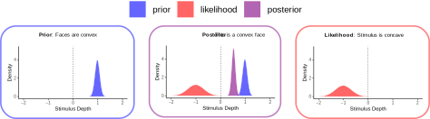
Perceptual Inference
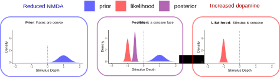
Hallucinations
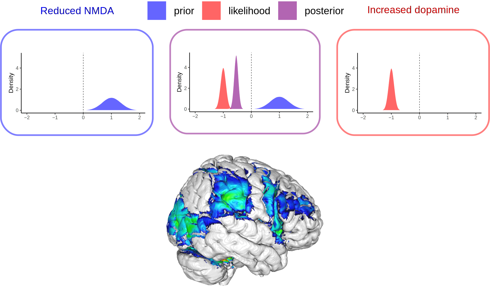
Hallucinations
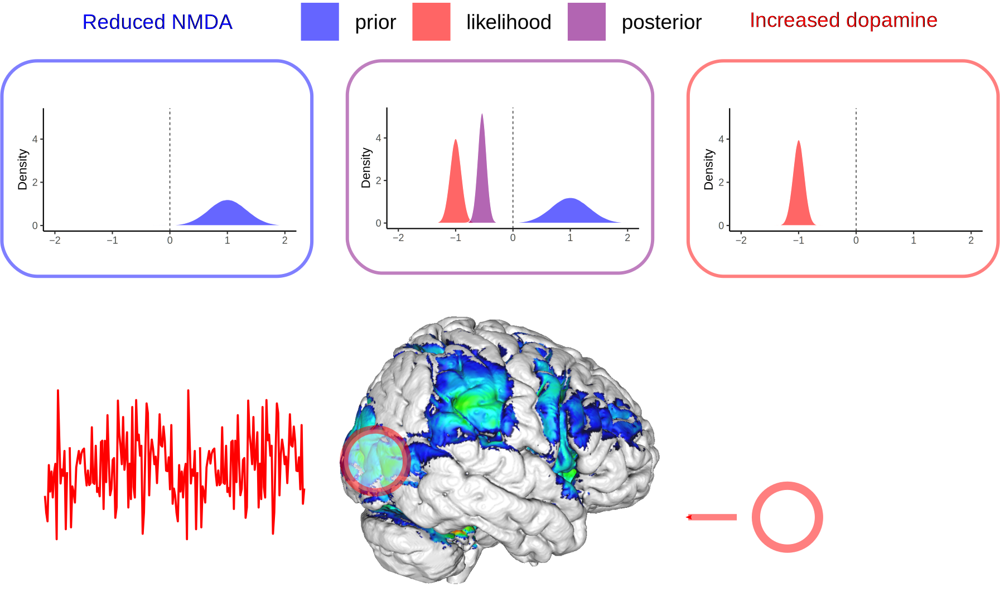
Hallucinations
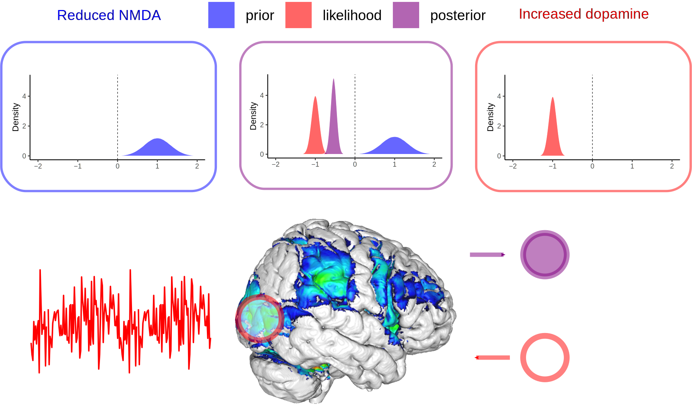
Outline
- How does the brain regulate the access of conflicting information into conscious experience?
- Are patients with a diagnosis of schizophrenia more sensitive to conflicting information?
- Can ketamine modulate the sensitivity to conflicting information?
Bistable Perception
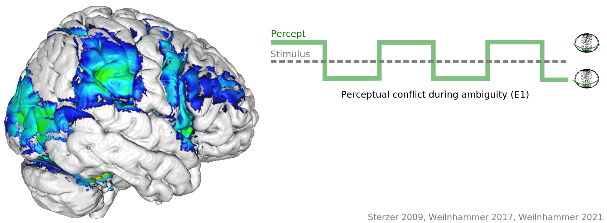
Bistable Perception
Bistable Perception
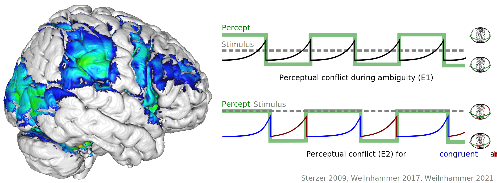
Model-based fMRI

- Prediction errors are encoded in IFC and V5/hMT+.
Model-based fMRI

- Prediction errors are encoded in IFC and V5/hMT+.
Model-based fMRI

- Prediction errors are fed forward from V5/hMT+ to IFC.
Model-based fMRI

- Perceptual content can be decoded from V5/hMT+.
Model-based fMRI

- Prediction errors are generated in suppressed V5/hMT+ voxels.
Feedforward Processing
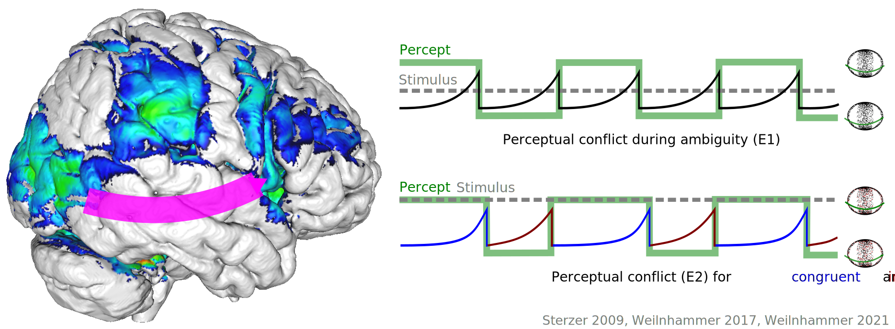
- Suppressed voxels in V5/hMT+ encode perceptual conflict.
- IFC receives feedforward information about perceptual conflict.
Feedback processing
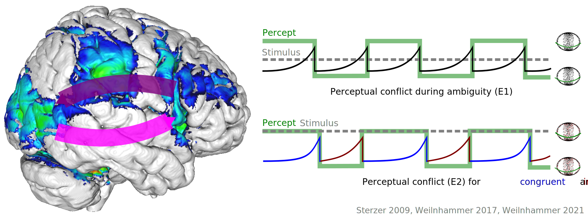
- Is the prefrontal representation of perceptual conflict relevant for conscious experience?
- Causal intervention: theta-burst stimulation in IFC and vertex
TMS

TMS

TMS

TMS
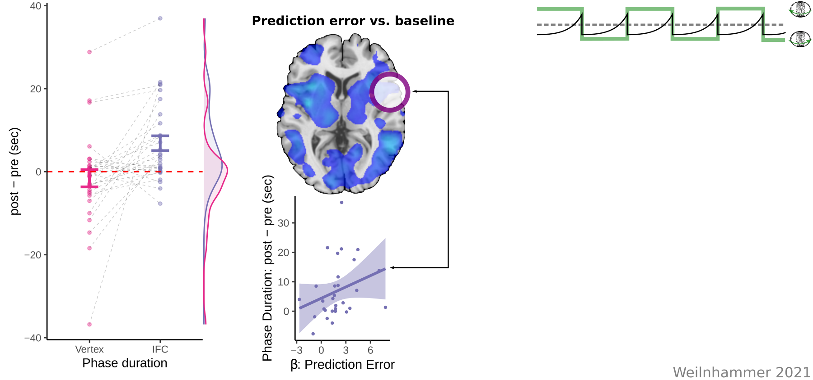
TMS

Perceptual Conflict
- IFC detects and resolves perceptual conflict during bistable perception.
- Are psychotic experiences linked to alterations in the processing of perceptual conflict?
Hallucinations
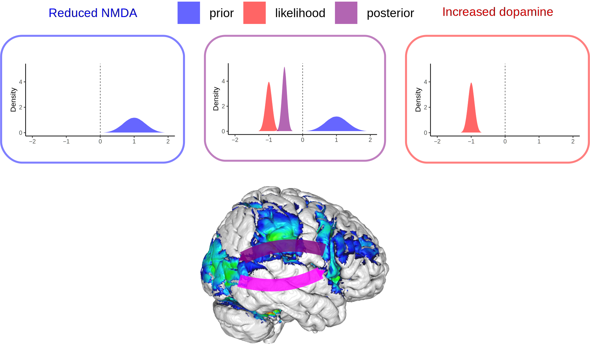
Hallucinations
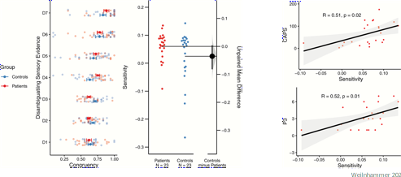
- Hallucinationary experiences correlate with sensitivity to conflicting information.
Hallucinations
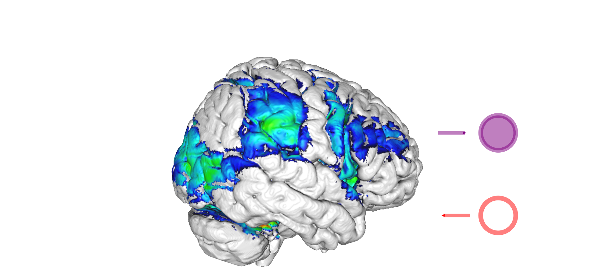
- IFC detects and resolves perceptual conflict during bistable perception.
Hallucinations
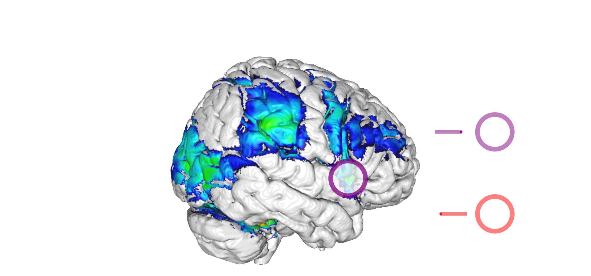
- TMS at IFC as a potential modulator of hallucinatory experiences?
NMDA-mediated feedback
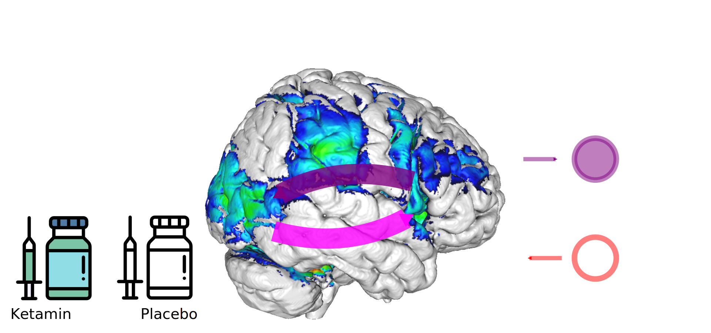
- Reproducing enhanced sensitivity to conflicting information by ketamine?
NMDA-mediated feedback
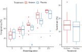
Summary
Thanks!
Thanks a lot for your attention!
Bibliography
Weilnhammer, Fritsch, Chikermane, Eckert, Kathak, Stuke, Sterzer. An Active Role of Inferior Frontal Cortex in Conscious Experience. Current Biology 2021.
Weilnhammer, Lukas, Eckert, Stuke, Heinz, Sterzer. Psychotic Experiences in Schizophrenia and Sensitivity to Sensory Evidence. Schizophrenia Bulletin 2020.
Weilnhammer, Stuke, Sterzer, Schmack. Hierarchical Predictions for Perceptual Decisions. Journal of Neuroscience 2018.
Weilnhammer, Stuke, Hesselmann, Sterzer, Schmack. A Predictive Coding Account of Bistable Perception. PLOS Computational Biology 2017.
Schmack, Weilnhammer, Heinzle, Stephan, Sterzer. Learning what to See in a Changing World. Frontiers in Humans Neurocience 2016.